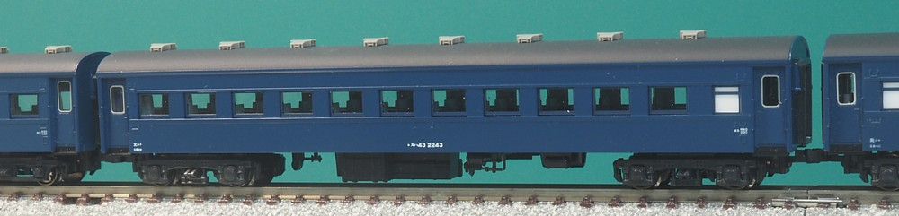
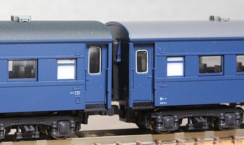
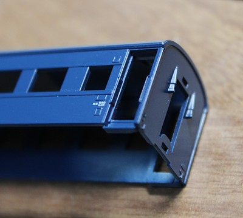
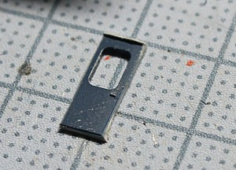
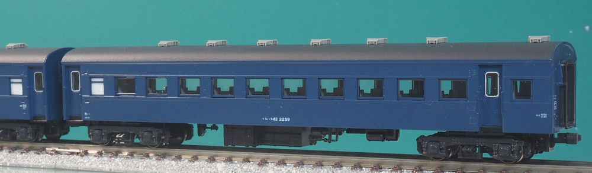
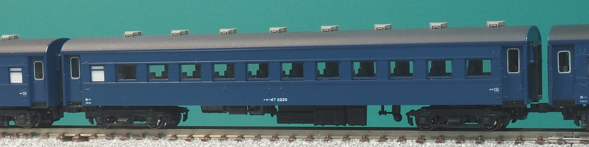
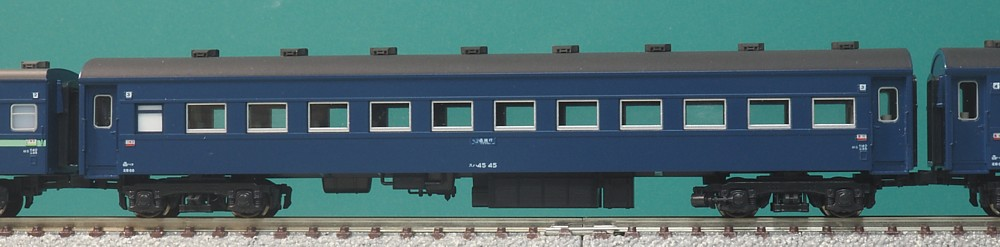
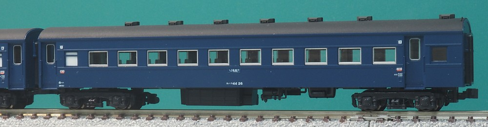

戦後、1951年～1956年にかけて製造された主に急行・特別急行向けの客車です。 半分折妻だったオハ35から進み、車体は完全な切妻となりました。
オハ35と比べると完全に戦後の製造で車体外板も厚くなり、 定員は変わらないものの切妻化により客室の長さがやや伸びたのでシートピッチは広がりました。 台車はウィングばね式のTR40の枕ばねを減らして柔らかくしたTR47と 設備的にはよくなりました。
難点は重かったことで、平坦線ではまだよかったものの勾配線区や 非力な機関車がけん引する末端の非電化区間になると組成の面では不利となりました。 台車をTR23に振り替えたり、徐々に軽量化を進めて末期では同一設計でも換算重量がひとつ下がって 別形式のオハ46になったりと軽量化は頑張ってたようです。
電車、気動車問わず急行型あるあるですが、 最末期には亜幹線の普通列車用に使われ、 福知山線などではほぼスハ43系だけで構成された普通列車の写真をよく見ます。

普通車の基本形式です。定員は88名。
Nゲージでは旧くからマニ60,スハフ42とともにKATOの旧型客車として発売されており、 のちにオハ47を加えたりしてプチバリエーション展開が行われていました。 その後2000年代にリニューアル。キハ82, DF50などとともにKATOが新機軸でいろいろやってた時代で、 窓枠がガラス側のモールドとなり、グレードアップパーツでアルミサッシの窓枠も発売されました。 たしかグレードアップパーツは当初ドアが交換可能と言ってた気もしますが 発売されたときにはなくなっており、さすがに無理だったんだなーと思った記憶があります。
薄型・ローフランジ車輪もかっこよかったのですが何かあったようで 再生産ではなくなってしまいました。
模型は屋根をかなり濃いダークグレーで塗装しています。 客用ドアは青色はプレスの大窓が付いてるのですが私は一部をオハ35のプレス小窓に交換しています。
オハ35と比べると床板も改善され車軸発電機もシルエットが素敵なものに変わりました。 ブレーキの配管の引き回しも多数派の配置に変わってます。 ちなみにこの床板、寸法はオハ35用と共通でシートピッチもオハ35用になってます。 刻印されてる品番もオハ35のもの。 オハ35も再生産で変わるのかなーと思わせておいて、あっちはずっと変わらずに旧い床板できてます。 なんかあるんでしょうかね…。



製作途中。ドアをくりぬいたところにオハ35のドアをはめ込みます。 注意して加工すれば部分塗装だけでいけるので、吹き付けの手間はありません。 オハ35のドアをスハ43にはめ込んでもサイズピッタリになる統一感は、さすがKATOです。 左側はドアをくりぬいて断面を塗装で仕上げたところ。
ここまでやると毎回ドアを開けたい衝動に駆られるのですが、その勇気が足りず毎回閉めた状態にしてしまっています。 ドアと窓を開けっぱなしにした夏仕様の旧客編成、いつか作ってみたいと思うのですが…

スハ43系の緩急車です。
こちらもドアをオハ35のものに交換。ちなみに3両ほど在籍していますが交換したのは 1両だけです。今のところ。 もとの車両のロットの違いか、上のスハ43と比較するとドアの色の違いが目立ったしまいましたが この程度なら再塗装しないで使うかな…という微妙なライン。

スハ43は重かったので、軽量化のために台車をTR23に交換しました。
重量区分が変わり、新しい形式となりました。(重量区分が変わることに意味があるわけで)
本家のスハ43のほうも製造が進むに従い軽量化が進み、末期には台車がTR47のままオハ46になってますからまぁ複雑です。
台車がどこから捻出されてるかというと、オロ40などをオハネ17に改造する際にオハネ17と交換した形です。
TR47を装備したオハネ17(のちにスハネ16)の乗り心地はよかったんだったとか。
KATOの旧製品時代から台車をTR47にしてバリエーション展開が行われてました。 リニューアル品では最初からラインナップに入ってます。

スハ43の北海道向けの車両で、改造ではなく新製です。 二重窓、大型の蓄電池箱、歯車式車軸発電機という北海道向けの旧型客車の定番装備(?)をつけてます。 歯車式の車軸発電機、笠歯歯車で発電機に回転を伝えるんですが見た目とともに音も結構印象的で、 (まぁ私は実物を聞いたことがあるわけではないので歴史映像からなのですが) ガーっといういかにもな音がします。
「ニセコ」「大雪」などのセットに含まれており、単品でも発売されました。 こちらもこの車両は窓をオハ35のものに交換しています。

スハフ42の北海道向けの車両です。
これも「ニセコ」用で、C62がけん引しますので屋根をほぼ真っ黒、ベンチレーターも結構きつめに汚しました。 端梁の工作もしたいですが、順番待ちです。